Genus Oithona
Oithona
There are two species of Oithona in the Delta region:
Oithona davisae
Oithona similis
This genus contains:
high salinity cyclopoid copepods
small relative to other copepods: 0.47 mm - 1 mm
- other copepods typically are 0.8 mm - 2.0 mm
Identification
Key characteristics:
hook-like rostrum at top of prosome in dorsal view (image below)
shallow split in rami (right image)
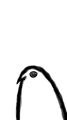
Hook-like rostrum
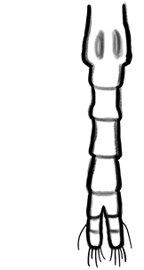
Short rami (adult female)
Oithona davisae
smaller of the two: 0.47-0.53 mm (males); 0.54-0.62mm (females) (Ferarri and Orsi 1984)
named after Sally Davis (now Skelton), who processes pump samples
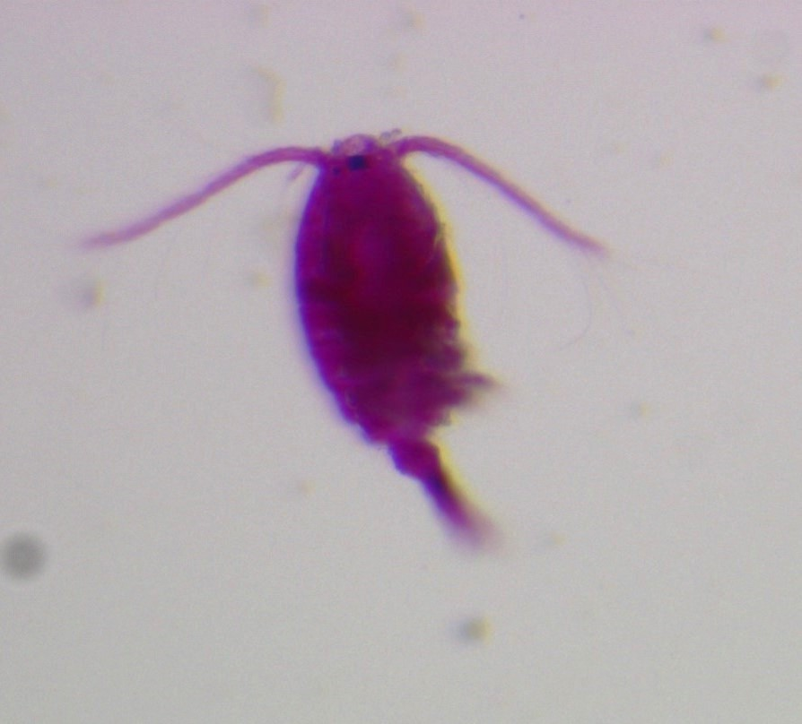 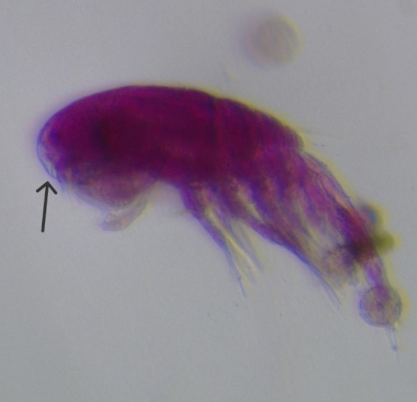 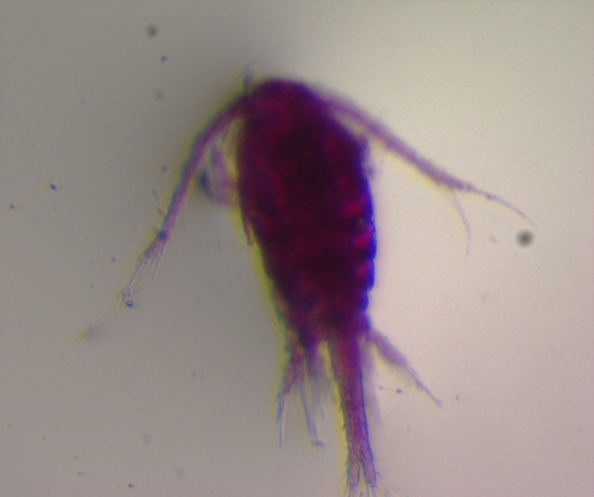
Oithona davisae adult female rostrum Oithona davisae adult male
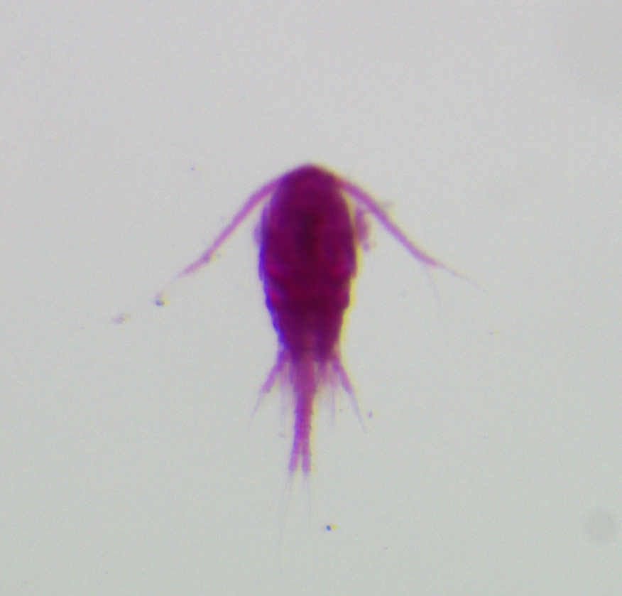
Oithona davisae juvenile
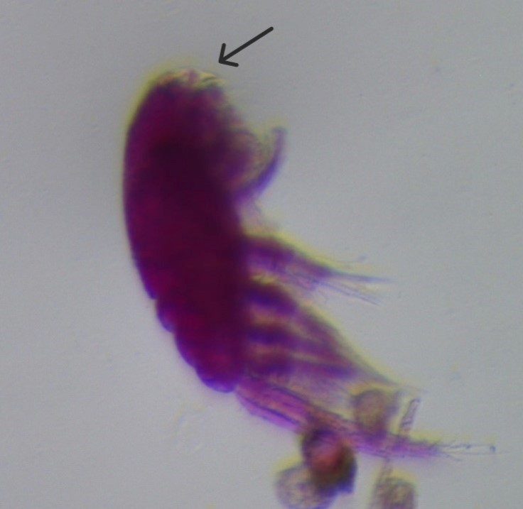
Oithona davisae beak
Oithona similis
- males size range 0.6 mm - 0.7 mm; females 0.7 mm - 1.0 mm (Scripps Institute of Oceanography)
- longer antennae
- very rare to find in pump samples
- only 38 identifications in pump samples from 2010-2022
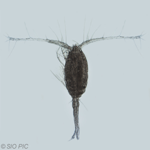 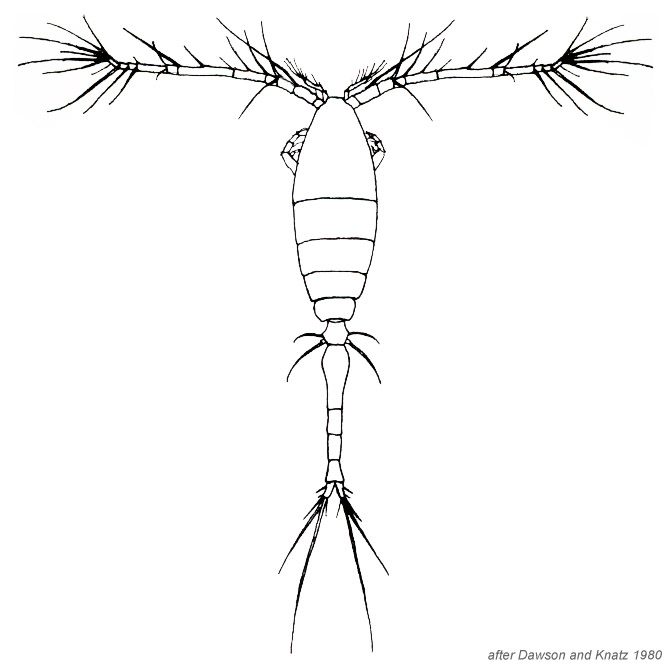
Scripps Institute of Oceanography, Dawson and Knatz 1980
Comparison Photos
Oithona davisae and Limnoithona spp.
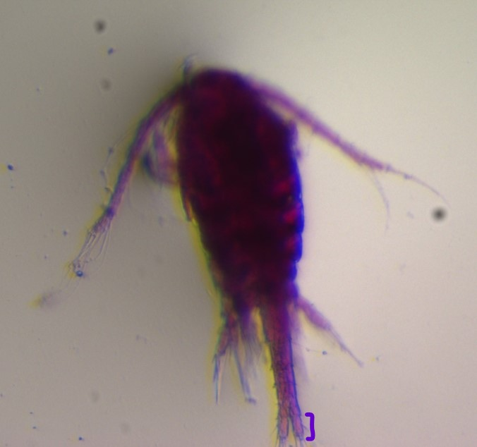
Oithona davisae adult
- short rami
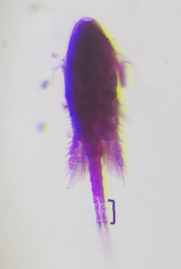
Limnoithona tetraspina adult
- long rami
Comparison photos
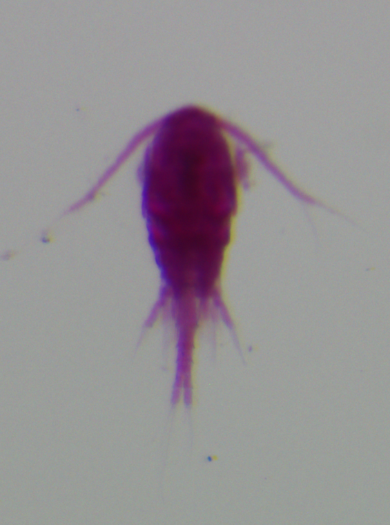
Oithona davisae juvenile
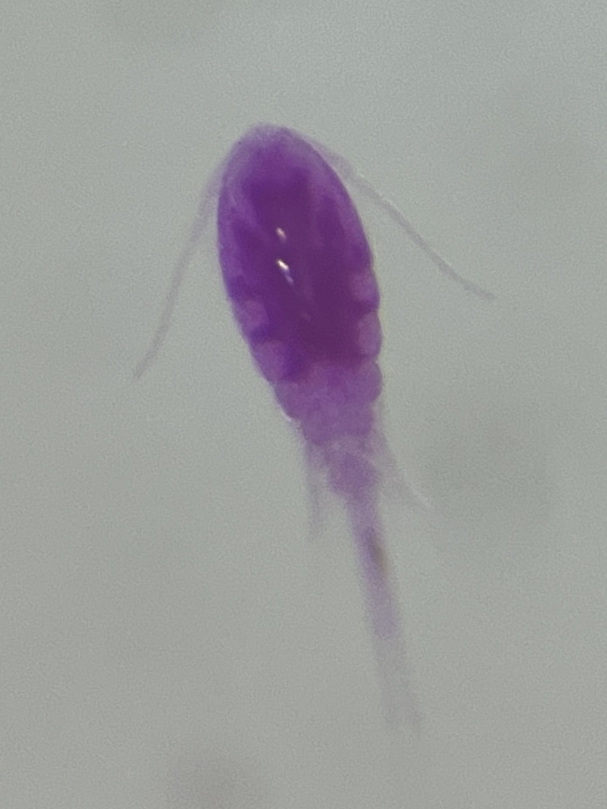
Limnoithona sinensis adult
References
- Dawson, J.K. & G. Knatz. (1980). Illustrated key to the planktonic copepods of San Pedro Bay, California. Allan Hancock Foundation, Technical Report. 2:1-106.
- Scripps Institute of Oceanography, Zooplankton Guide. https://sio-legacy.ucsd.edu/zooplanktonguide/